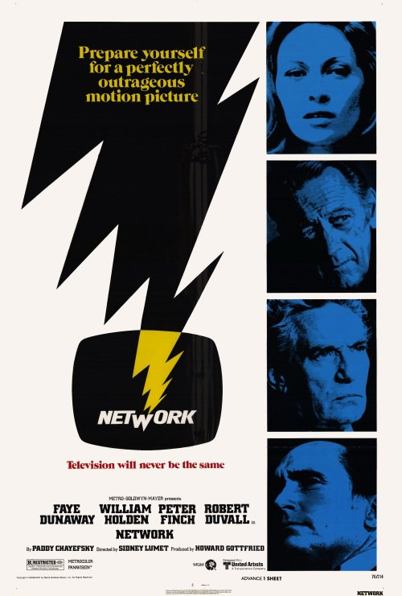

Season 44 (2009-2010)
-

September 13, 2009Directed by Sidney Lumet; Starring Faye Dunaway, William Holden, Peter Finch, Robert Duvall
Network
USA, 1976, 121 min, Color, R
Fired after 25 years of service, network TV anchorman Howard Beale (Peter Finch) has an on-air meltdown culminating in the cri de coeur "I'm mad as hell, and I'm not going to take it anymore!" Ratings soar. Programming executive Diana Christensen (Faye Dunaway) decides to retain Beale, recasting him as "The Mad Prophet of the Airwaves" and providing him a platform for his increasingly unhinged rantings. A biting satire of our sensationalized mass media circa 1976, Network now seems oddly prophetic in anticipating "reality" television and today's overheated cable news shows. The film won Oscars for Best Screenplay (Paddy Chayefsky), Best Actor (Finch), Best Actress (Dunaway), and Best Supporting Actress (Beatrice Straight).
Read Roger Ebert's review of Network at Great Movies. -
October 11, 2009Directed by Vittorio De Sica; Starring Carlo Battisti, Maria Pia Casilio, Lina Gennari, Ileana Simova
Umberto D
Italy, 1952, 89 min, B&W, Not Rated, Italian w/subtitles
The Italian classic Umberto D, from director Vittorio De Sica, offers a realistic character sketch of an elderly man, Umberto D. (Carlo Battisti), who is determined to retain his dignity in spite of a meager pension. Umberto attempts and fails to sell his meager belongings when he falls ill. After he returns from hospitalization for the illness, he makes an effort to beg on the street, but is foiled by his own pride. Hitting rock bottom, Umberto decides to kill himself as soon as he can find a new home for his beloved dog, Flag. In Umberto D, De Sica depicts the bleakness of life with unparalleled subtlety and craftsmanship. Deep focus photography details Umberto's isolation, while pointing out that countless other elderly poor people live in similar conditions. De Sica uses sound and music deftly to portray Umberto's subjective feelings and decisions. While many of De Sica's films achieved enormous critical acclaim, Umberto D is often considered the director's finest work.
Read Roger Ebert's review of Umberto D at Great Movies. -
 November 8, 2009Directed by Errol Morris; Starring Robert McNamara
November 8, 2009Directed by Errol Morris; Starring Robert McNamara
The Fog of War: Eleven Lessons from the Life of Robert S. McNamara
USA, 2003, 107 min, Color/B&W, PG-13
The Fog of War is a fascinating portrait of former Secretary of Defense Robert S. McNamara by esteemed documentarian Errol Morris. Morris structures his film around "11 Lessons from the Life of Robert McNamara", drawn from 20 hours of interviews with the 85-year-old McNamara, who commands the screen with his brilliance and intensity. By turns candid and evasive, impassioned and detached, sympathetic and monstrous, McNamara reflects on his role in bringing seatbelts to the Ford Motor Company, planning the firebombing of Japan in World War II, and escalating the war in Vietnam. Enriched by archival footage, photographs, and music from composer Phillip Glass, The Fog of War raises timeless (and timely) questions about war, human nature, and the uses and limits of power.
-
 December 13, 2009Directed by Khyentse Norbu; Starring Tshewang Dendup, Sonam Lhamo, Lhakpa Dorji, Deki Yangzom
December 13, 2009Directed by Khyentse Norbu; Starring Tshewang Dendup, Sonam Lhamo, Lhakpa Dorji, Deki Yangzom
Travelers and Magicians
Bhutan, 2003, 108 min, Color, Not Rated, Dzongkha w/subtitles
The first feature ever filmed in the kingdom of Bhutan, Travelers and Magicians weaves two parallel, fable-like tales about men seeking to escape their mundane lives. Dondup (Tshewang Dendup), a young government official, dreams of moving to America while stuck in a beautiful but isolated village. At his first chance, he heads for town and an awaiting visa, but things don't go quite as planned. Missing the bus, he hitchhikes with an elderly apple seller, a sage young monk, and an old man traveling with his beautiful daughter, Sonam. The monk tells Dondup a story of another young man, Tashi (Lhakpa Dorji), who sought a land far away: a tale of lust, jealousy and murder that holds up a mirror to the restless Dondup and his blossoming attraction to the innocent Sonam. This film is a magical mixture of rustic road movie and mystical fable – a potpourri of desire and its consequences set in a breathtaking landscape.
-
 January 10, 2010Directed by Woody Allen; Starring Woody Allen, Mia Farrow, Patrick Horgan, John Buckwalter
January 10, 2010Directed by Woody Allen; Starring Woody Allen, Mia Farrow, Patrick Horgan, John Buckwalter
Zelig
USA, 1983, 79 min, B&W, PG
Before Benjamin Button and Forrest Gump, there was Leonard Zelig. In this groundbreaking "mockumentary," writer-director Woody Allen plays Zelig, a chameleon-like cipher whose neuroses allow him to assimilate completely into his surroundings. Psychologist Eudora Fletcher (Mia Farrow) studies Zelig and seeks to protect him from his would-be exploiters. Combining voice-over, real and fake newsreels, and interviews with the likes of Susan Sontag and Saul Bellow, Zelig uses the conventions of documentary to weave its protagonist into the fabric of 20th-century history. The results are as technically impressive as they are funny.
-
 February 14, 2010Directed by Preston Sturges; Starring Joel McCrea, Veronica Lake, William Demarest, Eric Blore
February 14, 2010Directed by Preston Sturges; Starring Joel McCrea, Veronica Lake, William Demarest, Eric Blore
Sullivan's Travels
USA, 1941, 90 min, B&W, Not Rated
Preston Sturgis' masterpiece tells the story of John "Sully" Sullivan (Joel McRea), director of such Hollywood trifles as "Hey Hey in the Hayloft. Disillusioned by his comedic successes, Sullivan hits the road as a penniless hobo, seeking insight into the lives of the poor in order to make a socially conscious film, "Oh Brother, Where art Thou?" With his studio bosses' lackeys in hot pursuit, Sullivan meets a failed actress credited as the Girl (Veronica Lake), who joins him on his journey. Dedicated to "those who made us laugh: the motley mountebanks, the clowns, the buffoons, in all times and in all nations, whose efforts have lightened our burden a little," Sullivan's Travels celebrates the value of laughter in our lives.
-
March 14, 2010Directed by Jean-Luc Godard; Starring Claude Brasseur, Sami Frey, Anna Karina, Daniele Girard
Band of Outsiders (Bande à part)
France, 1964, 95 min, B&W, Not Rated, French w/subtitles
The story follows two friends with a fondness for old Hollywood B-movies, Arthur (Claude Brasseur) and Franz (Sami Frey), who are searching for a way to make a big score. When Franz meets the beautiful Odile (Anna Karina) and she informs him of a large chunk of cash her aunt keeps hidden in her house, the duo are convinced that this is their lucky break. Odile is a sensitive young woman who, out of fear and guilt, opposes their plan, but Arthur and Franz, who mimic America movie tough guys, coax her to go along with the idea. When the time comes to pull off the heist, a miscalculation delays the seemingly perfect plan, resulting in a confrontation that has dire consequences.
-
 April 11, 2010Directed by Ross McElwee; Starring Allan Gurganus, Paula Larke, Marilyn Levine, Emily Madison
April 11, 2010Directed by Ross McElwee; Starring Allan Gurganus, Paula Larke, Marilyn Levine, Emily Madison
Bright Leaves
USA, 2003, 107 min, Color, Not Rated
Ross McElwee (Sherman's March) is an autobiographical filmmaker and North Carolina native. His great-grandfather was a tobacco baron who invented the formula for Bull Durham tobacco but ultimately lost his fortune and ended in bankruptcy. Inspired by the 1950 movie, Bright Leaf, which was loosely based on his great-grandfather's rivalry with Washington Duke (and starred Gary Cooper and Lauren Bacall), McElwee produced Bright Leaves in Durham, North Carolina, to explore his family's complicated relationship with tobacco. Through conversations with family members, cancer patients, friends in the tobacco industry, and the film historian Vlada Petric, McElwee undertakes a deeply personal examination of the culture that arose from the cultivation of bright leaf tobacco in North Carolina after the end of the Civil War.
-
May 9, 2010Directed by Youssef Chahine; Starring Hamdy Ahmed, Yehia Chahine, Ezzat El Alaili, Tawfik El Deken
The Land (Al-ard)
Egypt, 1969, 130 min, Color, Not Rated, Arabic w/subtitles
Egyptian director Youssef Chahine won a lifetime achievement award at the Cannes Film Festival in 1997. His feudal epic, The Land, has been hailed as the greatest Egyptian film ever made. Set in the cotton-growing region along the Nile, the film portrays the struggle between a peasant village and a local landowner, who connives to appropriate the land that has sustained life in the Nile Valley for millennia. Against this backdrop, two men – the peasant Abdel Hadi (Ezzat El Alaili) and the educated Mohammed Effendi (Hamdi Ahmad) – vie for the hand of a beautiful peasant girl, Wassifa (Nagwa Ibrahim). Eight years in the making, The Land is a moving tribute to the people's resistance against the forces of privilege and corruption.
-
June 13, 2010Directed by John Ford; Starring Henry Fonda, Walter Brennan, Linda Darnell, Victor Mature, Cathy Downs
My Darling Clementine
USA, 1946, 97 min, B&W, Not Rated
In this genre-defining western from director John Ford, Wyatt Earp (Henry Fonda) and his three brothers stop outside Tombstone, Arizona, on the way to sell their cattle in California. After they refuse an offer for the stock from Old Man Clanton (Walter Brennan) and his son, Ike (Grant Withers), their cattle are stolen and the youngest brother is killed. Wyatt agrees to serve as Tombstone's marshal and soon meets Doc Holliday (Victor Mature). The wary friendship between the marshal and the consumptive, gun-slinging gambler is complicated by the arrival of Doc's former love, Clementine Carter (Cathy Downs). Although it features the legendary gunfight at the OK Corral, My Darling Clementine is more concerned with the creation of a community, the rule of law, and the civilizing influence of women in the Wild West.
Read Roger Ebert's review of My Darling Clementine at Great Movies. -
July 11, 2010Directed by Krzysztof Kieslowski; Starring Juliette Binoche, Benoît Régent, Florence Pernel, Charlotte Véry
Three Colors: Blue (Trois couleurs: Bleu)
France, 1993, 98 min, Color, R, French w/subtitles
Set in Paris at the dawn of the European Union, Blue is the first film in director Krysztof Kieslowski's "three colors" trilogy, based on the French flag and national motto "Liberty, Equality, and Fraternity." After surviving a car accident that claims her husband and daughter, Julie (Juliette Binoche) destroys all vestiges of her former life and withdraws into isolation. Determined to live her new life alone, Julie ultimately finds that she cannot rid herself of human connections. The film follows Julie through her grief as she emerges from her devastating loss and reenters the world as a vital, creative being. Music is central to Blue; Kieslowski's frequent collaborator, Zbigniew Preisner, composed the score prior to shooting, so that the film's action could follow its rhythms. The director's deft use of color as metaphor brings an additional layer of emotional depth to the story as it unfolds on the screen.
Read Roger Ebert's review of Three Colors: Blue at Great Movies. -
 August 8, 2010Directed by Yimou Zhang; Starring Benshan Zhao, Jie Dong, Lifan Dong, Biao Fu
August 8, 2010Directed by Yimou Zhang; Starring Benshan Zhao, Jie Dong, Lifan Dong, Biao Fu
Happy Times (Xingfu shiguang)
China, 2000, 102 min, Color, PG, Mandarin w/subtitles
Yimou Zhang co-directed and choreographed the opening and closing ceremonies of the 2008 Olympics. His second film set in a modern city, Happy Times is a bittersweet comedy about Zhao (Benshan Zhao), a retired factory worker who hopes to marry a rotund divorcee. To win over his prospective bride, Zhao creates the impression that he is a man of means. He enlists the aid of his best friend Li, who devises a plan to raise the 50,000 yuan Zhao needs for a suitable wedding. The two men refurbish an abandoned bus, dub it the Happy Times Hotel, and rent it out to young couples in need of privacy. Their business suffers when the upright Zhao can't bring himself to close the door to the "hotel" while it is occupied. Hoping to impress his betrothed with his position as a hotel manager, Zhao offers to employ her blind stepdaughter, Wu Ying (Jie Dong), as a masseuse. As he goes to increasingly absurd lengths to deceive Wu, they develop a deep if accidental bond that redeems his enterprise.